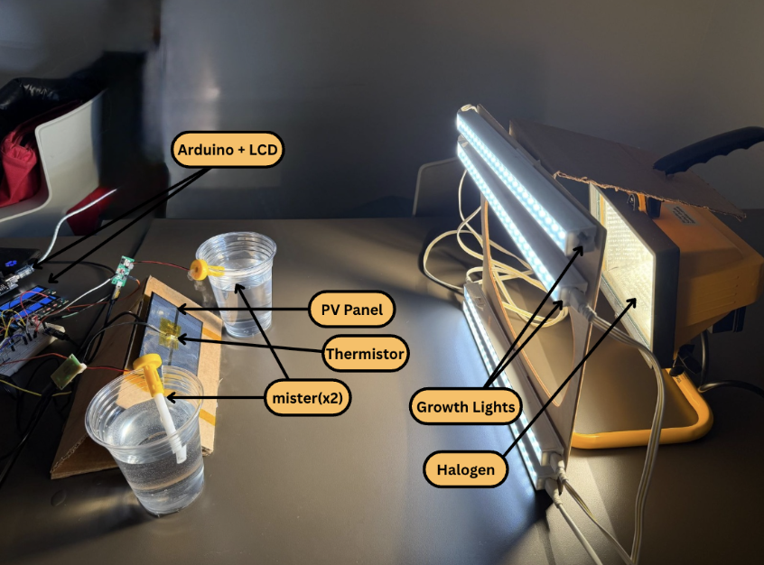

[ SYSTEM_DEVELOPMENT / HEXAPOD_V1 ]
18-DOF Biomimetic Locomotion Testbed
Kinematics & Trajectory
First, I created a Python-based gait simulator to validate trajectories in joint and workspace domains.
Mechanical Design
Designing for 18 micro-servos required focus on weight-to-torque ratios.


Gait Optimization
Initial testing was conducted with wiring and batteries kept off-body.

Electronics & Power Isolation
Coordinating 18 servos creates dirty power rails.